#1258 The Punisher
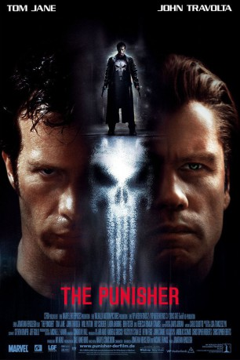 
 IMDB-Wertung: 6.5 / 10
IMDB-Wertung: 6.5 / 10  Metascore: 33
Metascore: 33 
Bei seinem letzten Undercovereinsatz als FBI-Special-Agent läuft es schlecht für Frank Castle, denn versehentlich wird ein junger Mann dabei getötet. Leider handelt es sich dabei um den Sohn des wohlhabenden Howard Saint, der dem Verantwortlichen daraufhin Rache schwört, denn hinter Saints Fassade lauert ein Magnat des Verbrechens. Dem beauftragten Killertrupp fällt dann auch Castles komplette Familie zum Opfer, er selbst überlebt schwer verletzt. Von dem Wunsch nach Vergeltung getrieben und mit schwerer Artillerie bewaffnet nimmt er die Tarnexistenz des "Punisher" an und beginnt, die Verantwortlichen aufzuspüren und auszulöschen, während er sich um als Mensch schwertut, in menschliche Gesellschaft wieder hineinzuwachsen...
Jahr: 2004
Dauer: 124 Minuten
FSK: 18
Land: USA Studio: Lions Gate FilmsTonspuren: DD5.1 - ,
Untertitel:
Auflösung: 1080p (1920x816) Größe: 6819 MB
Genre: Action, Abenteuer, Krimi, Drama, Thriller
Regisseur: Jonathan Hensleigh
Drehbuch: Jonathan Hensleigh, Michael France
Soundtrack: Carlo Siliotto
Darsteller:
- A. Russell Andrews als Jimmy Weeks
- Omar Avila als Joe Toro
- James Carpinello als Bobby Saint / John Saint
- Mark Collie als Harry Heck
- Russell Durham Comegys als Tattooed Mike
 Antoni Corone als T.J.
Antoni Corone als T.J.- 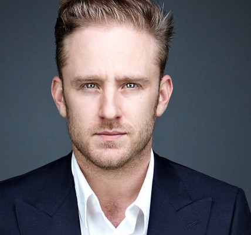 Ben Foster als Spacker Dave
- 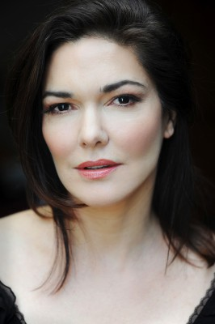 Laura Harring als Livia Saint
- William Haze als EMT
- 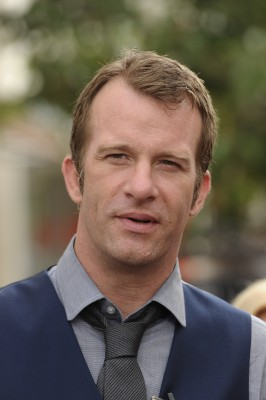 Thomas Jane als Frank Castle
 Eddie Jemison als Mickey Duka
Eddie Jemison als Mickey Duka Marco St. John als Police Chief Morris
Marco St. John als Police Chief Morris- Marcus Johns als Will Castle
- 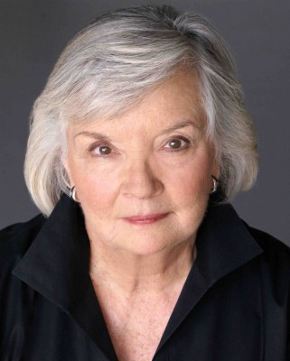 Bonnie Johnson als Betty Castle
- Alan Lilly als Accountant #3
- Terry Loughlin als Spoon
 Marc Macaulay als Dante
Marc Macaulay als Dante Samantha Mathis als Maria Castle
Samantha Mathis als Maria Castle- Jim Meskimen als Accountant #1
- 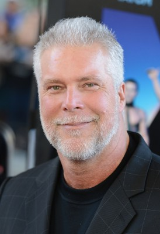 Kevin Nash als The Russian
- 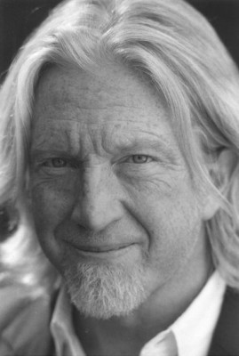 Tom Nowicki als Lincoln
- 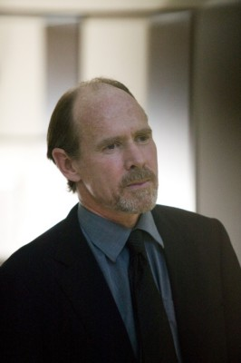 Will Patton als Quentin Glass
- John Pinette als Bumpo
- Steve Raulerson als Yuri Astrov
 Rebecca Romijn als Joan
Rebecca Romijn als Joan- 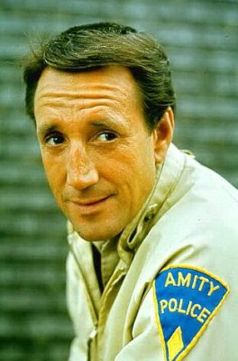 Roy Scheider als Frank Castle Sr.
- Sonny Surowiec als Saint Puerto Rico Enforcer
- 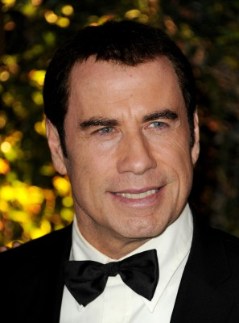 John Travolta als Howard Saint
- Eduardo Yáñez als Mike Toro
- Bobby Black als Chino Binamo
 Jeff Chase als Enforcer , uncredited
Jeff Chase als Enforcer , uncredited- Georgia Chris als Reporter , uncredited
- Charleene Closshey als Castle Family Friend , uncredited
- Michael Deadman als Hitman , uncredited
- Darla Delgado als Castle Family Member , uncredited
- Michael Thomas Dunn als Beach Visitor , uncredited
- Khris Gibston als FBI Agent , uncredited
- J.C. Loader als Night Club Singer , uncredited
- 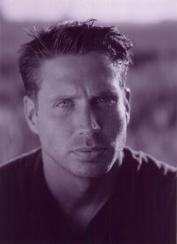 Nick Loren als Agent Moss , uncredited
- Sebastian Page als Frantic Businessman , uncredited
- Gustavo Perez als Mafia Thug , uncredited
- Michael A. Quill als Lieutenant , uncredited
- Kassie Spielman als Castle Family Member , uncredited
- Matt Totty als Bar Manager for Howard Saint, John Travolta , uncredited
- Rick Elmhurst als Bay News 9 Newscaster
- Michael Reardon als Toro Croupier
- Veryl Jones als Candelaria
- Carleth Keys als Bay News 9 Newscaster
- Robin O'Dell als Field Reporter
- Yamil Piedra als Toro Pit Boss
Datei: X:\FSK18-2000-2009\Punisher, The (2004, FSK18, 1920x816).mkv seit 12.06.2015
Festplatte: FSK18
 Es gibt insgesamt 106 Filme in der Gruppe 'FSK18-2000-2009'
Es gibt insgesamt 106 Filme in der Gruppe 'FSK18-2000-2009'